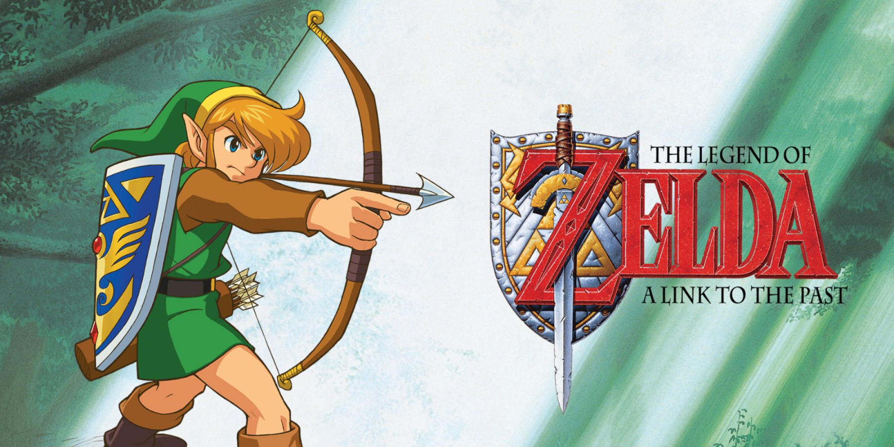

Um dos títulos mais aclamados pela franquia, junto com o recente Breath Of The Wild e outros.
The Legend of Zelda: Ocarina of Time é um jogo eletrônico de ação e aventura desenvolvido e publicado pela Nintendo para o Nintendo 64. Foi lançado no Japão e na América do Norte em novembro de 1998 e nas regiões PAL no mês seguinte. Ocarina of Time é o primeiro jogo da série The Legend of Zelda com gráficos 3D.
The Legends Of Zelda: Majora's Mask
Majora's Mask. Sucessor do grandioso Ocarina Of Time.
Trouxe de volta tudo que era bom de seu antecessor, e as melhorou.
Um exemplo disso é a mecânica de viagem no tempo, a história, e o próprio design de níveis do jogo em si.
Majora's Mask ficou marcado como o sendo o jogo mais sombrio e diferente de toda a franquia, erguendo sua própria legião de fãs que o consideram o melhor jogo da franquia.
Por incrível que pareça, Majora's Mask não foi uma ideia de Miyamoto, e sim de seu grande colega e amigo, Takaya Miyamura.
Gostaria de ressaltar que, apesar de Ocarina Of Time ser um marco lendário na história dos jogos, Majora's Mask é exótico, sombrio e dinâmico.
Aqui segue uma das trilhas sonoras mais icônicas de toda a franquia: "Sonata da Cura".
The Legend Of Zelda: Breath Of The Wild
Aqui Está O Trailer de um dos jogos mais amados pelos jogadores. Esse jogo é conhecido por oferecer uma liberdade encantadora no seu modo de progressão, você não tem uma ordem definida para fazer as missões. Você pode simplesmente passar a maior parte da jogatina explorando uma Hyrule a beira da destruição e interagindo com cada elemento do mundo, por menor ou mais insignificante que ele seja ou pareça ser. A falta de linearidade desse jogo é que mais encanta os jogadores que o colocam como o melhor jogo já feito em toda história, até o surgimento de seu sucessor pelo menos.
The Legends Of Zelda: A Link To The Past

A Link To The Past foi lançado no ano de 1991. Para o ano em que foi lançado esse jogo foi marco absoluto, cativante e dinâmico, com uma história intrigante e um mundo cheio de desafios. A Link To The Past é fantástico em todos os sentidos, e em comparação com outros jogos da época, este foi eleito por muitos como o melhor jogo já feito na história.
A história Narra a trajetória de Link, que é incubido pelo seu tio com a tarefa de salvar e proteger Hyrule de um mago das trevas que dominou o reino e está em busca de uma antiga relíquia que antes era protegida pelos Hylians(antes deles serem quase extintos).